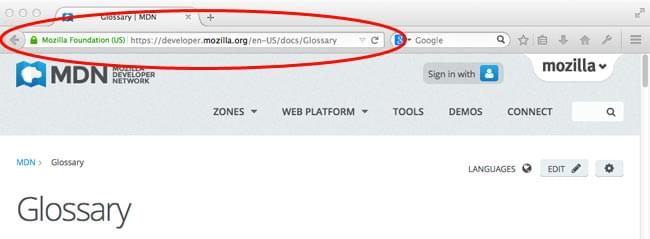
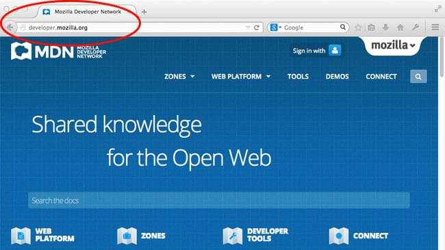

In this article, we describe various web-related concepts: web pages, websites, web servers, and search engines. These terms are often confused by newcomers to the web or are incorrectly used. Let's learn what they each mean!
| Prerequisites: | You should know how the Internet works. |
|---|---|
| Objective: | Be able to describe the differences between a web page, a website, a web server, and a search engine. |
As with any area of knowledge, the web comes with a lot of jargon. Don't worry, we won't overwhelm you with all of it (we have a glossary if you're curious). However, there are a few basic terms you need to understand at the outset, since you'll hear these expressions all the time as you read on. It's easy to confuse these terms sometimes since they refer to related but different functionalities. In fact, you'll sometimes see these terms misused in news reports and elsewhere, so getting them mixed up is understandable!
We'll cover these terms and technologies in more detail as we explore further, but these quick definitions will be a great start for you:
Let's look at a simple analogy — a public library. This is what you would generally do when visiting a library:
Let's compare the library with a web server:
There is no active learning available yet. Please, consider contributing.
So, let's dig deeper into how those four terms are related and why they are sometimes confused with each other.
A web page is a simple document displayable by a {{Glossary("browser")}}. Such documents are written in the {{Glossary("HTML")}} language (which we look into in more detail in other articles). A web page can embed a variety of different types of resources such as:
Note: Browsers can also display other documents such as {{Glossary("PDF")}} files or images, but the term web page specifically refers to HTML documents. Otherwise, we only use the term document.
All web pages available on the web are reachable through a unique address. To access a page, just type its address in your browser address bar:

A website is a collection of linked web pages (plus their associated resources) that share a unique domain name. Each web page of a given website provides explicit links—most of the time in the form of clickable portion of text—that allow the user to move from one page of the website to another.
To access a website, type its domain name in your browser address bar, and the browser will display the website's main web page, or homepage (casually referred as "the home"):

The ideas of a web page and a website are especially easy to confuse for a website that contains only one web page. Such a website is sometimes called a single-page website.
A web server is a computer hosting one or more websites. "Hosting" means that all the web pages and their supporting files are available on that computer. The web server will send any web page from the website it is hosting to any user's browser, per user request.
Don't confuse websites and web servers. For example, if you hear someone say, "My website is not responding", it actually means that the web server is not responding and therefore the website is not available. More importantly, since a web server can host multiple websites, the term web server is never used to designate a website, as it could cause great confusion. In our previous example, if we said, "My web server is not responding", it means that multiple websites on that web server are not available.
Search engines are a common source of confusion on the web. A search engine is a special kind of website that helps users find web pages from other websites.
There are plenty out there: Google, Bing, Yandex, DuckDuckGo, and many more. Some are generic, some are specialized about certain topics. Use whichever you prefer.
Many beginners on the web confuse search engines and browsers. Let's make it clear: A browser is a piece of software that retrieves and displays web pages; a search engine is a website that helps people find web pages from other websites. The confusion arises because, the first time someone launches a browser, the browser displays a search engine's homepage. This makes sense, because, obviously, the first thing you want to do with a browser is to find a web page to display. Don't confuse the infrastructure (e.g., the browser) with the service (e.g., the search engine). The distinction will help you quite a bit, but even some professionals speak loosely, so don't feel anxious about it.
Here is an instance of Firefox showing a Google search box as its default startup page: